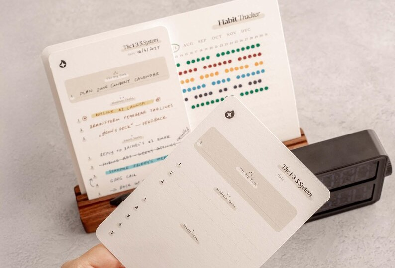
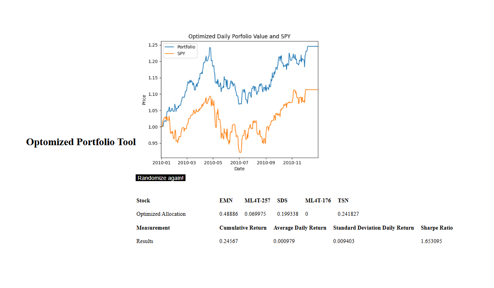
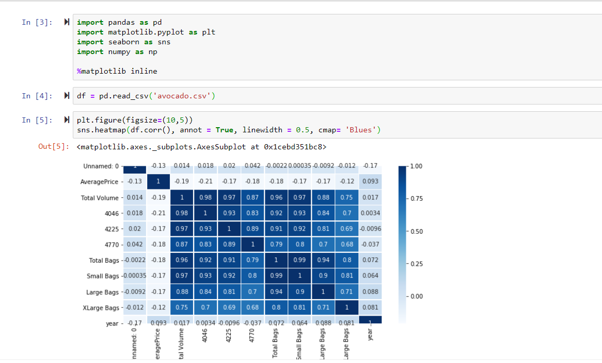

Python
Experienced
Get To Know More
M.S. Analytics, Computational Data
B.S. Computer Science
Full Stack Management
I'm Leanne Vu, a Master of Science candidate in Analytics (Computational Data Track) at Georgia Institute of Technology. My work focuses on building and evaluating data-driven systems; specifically, how modeling choices, representations, and evaluation frameworks play out in practice, not just on paper. I started in full-stack web development, earned my CS degree from the University of Washington, and gradually moved toward Python-based analysis and experimental workflows. These days I spend most of my time designing and iterating on models using Pandas, Scikit-learn, Matplotlib, and Flask. I often embed the analysis directly into interactive applications rather than keeping it separate. I maintain a long-form technical blog, which is more about being honest and less about broadcasting. It's where I work through assumptions, document what broke and why, and think carefully about trade-offs. That habit shapes how I approach research more broadly. What drives me is rigorous user-facing systems that integrate data, reasoning, and usability.
Explore My
Experienced
Experienced
Intermediate
Intermediate
Experienced
Experienced
Experienced
Experienced
Browse My Recent



Get in Touch